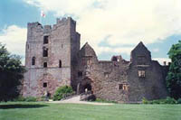
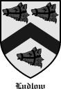
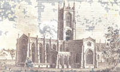

|
Ludlow History: |
| The LUDLOW surname started over 900 years ago by someone who was known as “de Ludelowe” (of Ludlow). Ludlow (or Ludelaue, meaning the ‘loud lowland’ or ‘roaring hill’ by the noisy rapids of the River Teme) was a Celtic town near the Welsh border where William the Conqueror built Ludlow Castle. |  Ludlow Castle, Shropshire England |
|
 |
During the medieval period, the Ludlows spread southeast to Gloucestershire and Wiltshire where a Stephen and Joan Ludlow lived in the Shipton-Moyne area in the early 1500’s. Stephen & Joan Ludlow had two large families of descendants:
Walter (c. 1575-1639) & Bridget Ludlow |
|
The posterity of John & Edith Ludlow included Thomas and Grace Ludlow of the Tetbury, Gloucester area, who, in turn, were the grandparents of Thomas Ludlow, a British soldier who died fighting Napoleon’s forces in Holland in 1799. Thomas’ son, John, and Mary Matthews LUDLOW started their family some two centuries ago in Avening, Gloucestershire, England. Their children Hannah, Nathaniel, Daniel, James, John, and William now have many known descendants living in England, Australia, and the USA. |
 Ludlow Church, Shropshire England |
|
To learn more about the Ludlow name and famous Ludlows from England and the United States, click on the following article: |